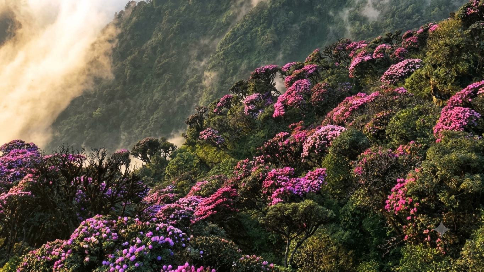
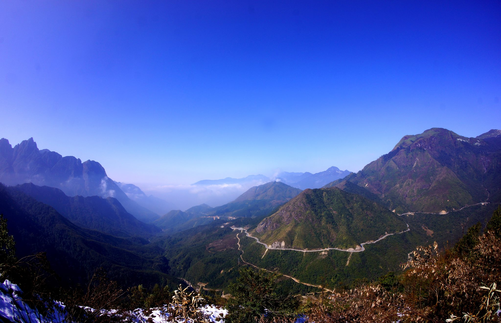

TAM ĐƯỜNG
01
Đỉnh Putaleng
Chinh phục biển mây và sắc hoa đỗ quyên giữa rừng già.
ĐI ĐỂ THẤY LAI CHÂU
Từ đỉnh núi phủ mây đến bản làng bình yên, mỗi hành trình đều mở ra một Lai Châu thật khác.
Khám phá điểm đếnNĂM SẮC THÁI TÂY BẮC
Chọn một điểm dừng chân, bắt đầu hành trình khám phá núi rừng và bản làng Lai Châu.

Chinh phục biển mây và sắc hoa đỗ quyên giữa rừng già.

Cung đèo hùng vĩ giữa tầng mây và núi thẳm.

Không khí trong lành, cảnh sắc bình yên quanh năm.

Ghé thăm bản du lịch cộng đồng giữa lưng chừng núi.
Ngắm núi non từ góc nhìn giữa tầng mây.